Chapter 6. 다층 퍼셉트론(MLP : MutiLayer Perceptron)- 2¶
1절. TensorFlow
2절. Keras
1절. TensorFlow¶
텐서플로우(TensorFlow)¶
- 딥러닝 프레임워크의 일종
- 내부적인 C/C++ 구현
- 여러 가지 언어(+ Python)에서 접근 가능한 인터페이스 제공
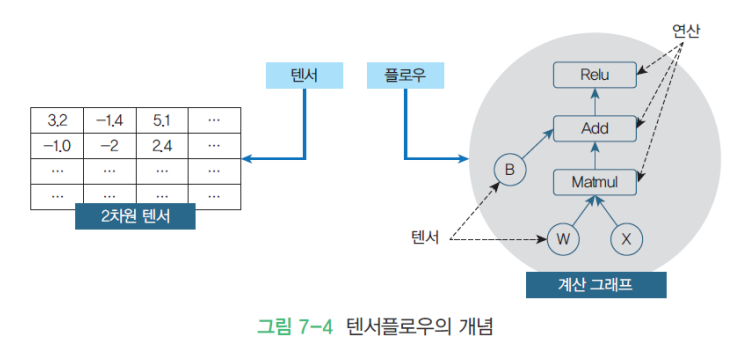
텐서플로우 구조¶
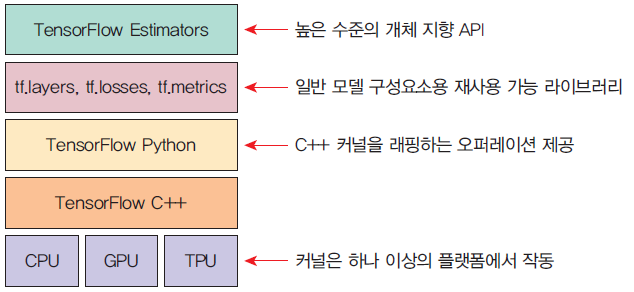
- C++ 커널을 Python 으로 한 번 래핑
Tensor¶
- 다차원 넘파이 배열
- 데이터(실수)를 저장하는 컨테이너
- 배열의 차원은 축(axis)
차원 별 텐서 생성¶
- 차원 수가 증가하면 차원(size)의 앞에 숫자 추가
import numpy as np
x = np.random.randint(5, size = (2, 4, 3, 3))
# 3차원 = (4, 3, 3) / 4차원 = (2, 4, 3, 3)
3차원 텐서¶
import numpy as np
x = np.array([[[0, 1, 2, 3, 4],
[5, 6, 7, 8, 9]],
[[10, 11, 12, 13, 14],
[15, 16, 17, 18, 19]],
[[20, 21, 22, 23, 24],
[25, 26, 27, 28, 29]]])
x.ndim
# 3
x.shape
# (3, 2, 5)
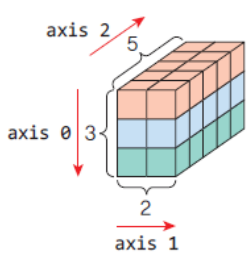
텐서의 속성¶
- 텐서의 차원(축의 개수) : 텐서에 존재하는 축의 개수 / 3차원 텐서에는 3개의 축이 있으며 ndim 속성
- 형상(Shape) : 텐서의 각 축으로 얼마나 데이터가 있는지를 파이썬 튜플로 표현
- 데이터 타입(Data Type) : 텐서 요소의 자료형
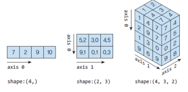
훈련 데이터 형상¶
벡터 데이터¶
- (배치 크기, 특징 수)의 형상
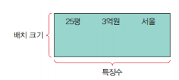
이미지 데이터¶
- (배치 크기, 이미지 높이, 이미지 너비, 채널 수)의 형상
- 4차원 넘파이 텐서에 저장
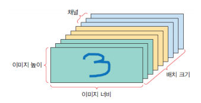
시계열 데이터¶
- (배치 크기, 타입 스텝, 특징 수)의 형상
- 3차원 넘파이 텐서에 저장
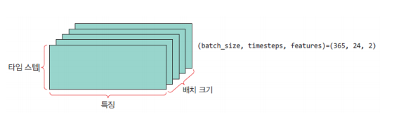
2절. Keras¶
케라스(Keras)¶
- 파이썬으로 작성된 고수준 딥러닝 API
- 여러 가지 백엔드를 선택 가능(가장 많이 선택되는 백엔드는 텐서플로우)
- 쉽고 빠른 프로토타이핑 가능
- 피드포워드 신경망, 컨볼루션 신경망, 순환 신경망 등 여러 가지 조합 지원
- CPU 및 GPU에서 원활하게 실행
딥러닝 프레임워크¶
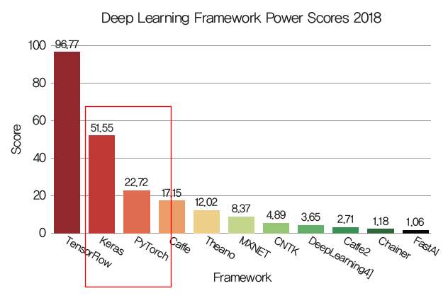
신경망 작성(by keras)¶
- 케라스의 핵심 데이터 구조는 모델(model)
- 레이어 구성 방법
- 가장 간단한 모델 유형은 Sequential 선형 스택 모델
- Sequential 모델은 레이어를 선형으로 쌓을 수 있는 신경망 모델
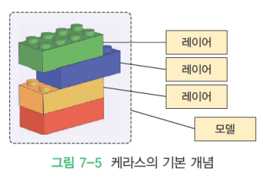
실습 : XOR를 학습하는 MLP¶
- 구조
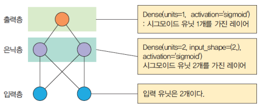
- 훈련 데이터
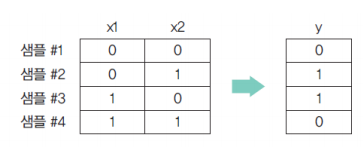
- 모델 생성 코드
model = tf.keras.models.Sequential()
# Sequential 모델 생성
model.add(tf.keras.layers.Dense(units = 2,
input_shape = (2,),
activation = 'sigmoid'))
# 유닛 1 : 은닉층
# 은닉층이 하나 더 생겼을 경우 아래 코드 작성
# model.add(tf.keras.layers.Dense(units = 2, activation = 'sigmoid'))
model.add(tf.keras.layers.Dense(units = 1, activation='sigmoid'))
# 유닛 2 : 출력층
# Sequential 모델에 add() 함수를 이용하여 필요한 레이어 추가
model.compile(loss='mean_squared_error',
optimizer=keras.optimizers.SGD(lr = 0.3))
# compile() 함수 호출을 통한 Sequential 모델 컴파일
# 사용 학습법에 따라 성능 차이 존재
- 모델 테스트 코드
케라스 사용 방법¶
1) Sequential 모델 생성 후 모델에 필요한 레이어 추가¶
model = Sequential()
model.add(Dense(units=2, input_shape=(2,), activation='sigmoid'))
model.add(Dense(units=1, activation='sigmoid'))
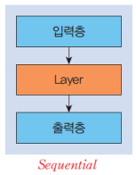
2) 함수형 API 사용¶
inputs = Input(shape=(2,)) # 입력층
x = Dense(2, activation="sigmoid")(inputs) # 은닉층 1
prediction = Dense(1, activation="sigmoid")(x) # 출력층
model = Model(inputs=inputs, outputs=prediction)
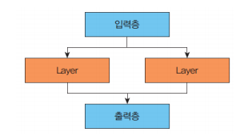
3) Model 클래스 상속 후 클래스 정의¶
class SimpleMLP(Model):
def __init__(self, num_classes): # 생성자 작성
super(SimpleMLP, self).__init__(name='mlp')
self.num_classes = num_classes
self.dense1 = Dense(32, activation='sigmoid')
self.dense2 = Dense(num_classes, activation='sigmoid')
def call(self, inputs): # 순방향 호출을 구현
x = self.dense1(inputs)
return self.dense2(x)
model = SimpleMLP()
model.compile(...)
model.fit(...)
Keras를 이용한 MNIST 숫자 인식¶
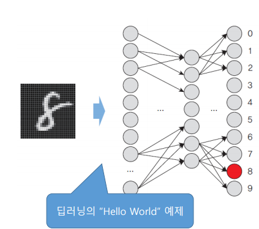
- 입력 : 784(28 * 28)
- 출력 : 10(0 ~ 9)
숫자 데이터 관리¶
숫자 데이터 불러오기¶
- 28 * 28로 60000개의 이미지 존재
import matplotlib.pyplot as plt
import tensorflow as tf
(train_images, train_labels), (test_images, test_labels)
= tf.keras.datasets.mnist.load_data()
숫자 데이터 표시¶
train_images.shape
# (60000, 28, 28)
train_label
# array([5, 0, 4, ..., 5, 6, 8], dtype=uint8)
test_images.shape
# (10000, 28, 28)
plt.imshow(train_images[0], cmap="Greys")
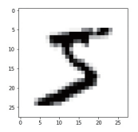
신경망 모델 구축¶
model = tf.keras.models.Sequential()
model.add(tf.keras.layers.Dense(512, activation = 'relu',
input_shape = (784, )))
model.add(tf.keras.layers.Dense(10, activation = 'sigmoid'))
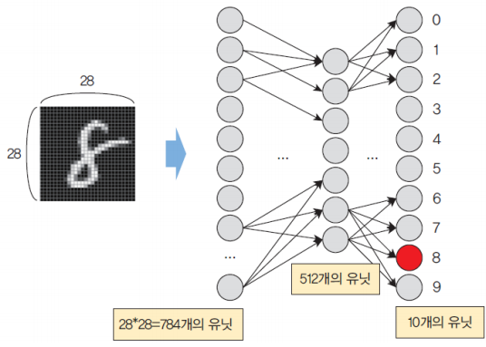
컴파일 단계¶
- 손실 함수(Loss Function) : 신경망의 출력과 정답 간의 오차를 계산하는 함수
- 옵티마이저(Optimizer) : 손실 함수를 기반으로 신경망의 파라미터(매개 변수)를 최적화하는 알고리즘
- 지표(Metric) : 훈련과 테스트 과정에서 사용되는 척도
데이터 전처리 과정¶
데이터 전처리¶
train_images = train_images.reshape((60000, 784))
train_images = train_images.astype('float32') / 255.0
test_images = test_images.reshape((10000, 784))
test_images = test_images.astype('float32') / 255.0
- 데이터를 255로 나눈 후 축소(정규화)
- 0~1 범위의 실수로 교체하는 과정
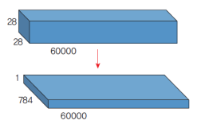
정답 레이블 형태 변경(원핫 인코딩)¶
train_labels = tf.keras.utils.to_categorical(train_labels)
test_labels = tf.keras.utils.to_categorical(test_labels)
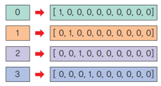
학습¶
model.fit(train_images, train_labels, epochs = 5, batch_size = 128)
# ...
# Epoch 5/5
# 469/469 [==============================] - 2s 3ms/step
# - loss: 0.0027 - accuracy : 0.9867
- Loss값은 감소, accuracy는 증가
테스트¶
test_loss, test_acc = model.evaluate(test_images, test_labels)
print('테스트 정확도 : ', test_acc)
# 313/313 [==============================] - 0s 892us/step
# - loss : 0.0039 - accuracy : 0.9788
# 테스트 정확도: 0.9787999987602234
그래프 그리기¶
history = model.fit(train_images, train_labels, epochs=5, batch_size=128)
loss = history.history['loss']
acc = history.history['accuracy']
epochs = range(1, len(loss) + 1)
plt.plot(epochs, loss, 'b', label='Training Loss') # 파란색
plt.plot(epochs, acc, 'r', label='Accuracy') # 빨간색
plt.xlabel('epochs')
plt.ylabel('loss/acc')
plt.show()
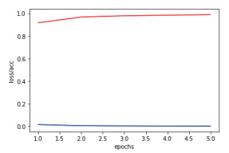
실제 이미지로 테스트¶
import cv2 as cv
image = cv.imread('test.png', cv.IMREAD_GRAYSCALE)
image = cv.resize(image, (28, 28))
image = image.astype('float32')
image = image.reshape(1, 784)
image = 255-image
image /= 255.0
plt.imshow(image.reshape(28, 28),cmap='Greys')
plt.show()
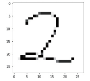
테스트¶
pred = model.predict(image.reshape(1, 784), batch_size=1)
print("추정된 숫자 =", pred.argmax())
# 추정된 숫자 = 2
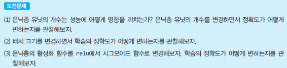
케라스 입력 데이터¶
- 넘파이 배열
- TensorFlow Dataset 객체 : 크기가 커서 메모리에 한 번에 적재될 수 없는 경우 디스크 또는 분산 파일 시스템에서 스트리밍 가능
- Python Generator : 예시로, keras.utils.Sequence 클래스는 하드 디스크에 위치한 파일을 읽어서 순차적으로 케라스 모델로 공급
케라스 클래스¶
- 모델 : 하나의 신경망
- 레이어 : 신경망에서 하나의 층
- 입력 데이터 : 텐서플로우 텐서 형식
- 손실 함수 : 신경망의 출력과 정답 레이블 간의 차이 측정
- 옵티마이저 : 학습 수행 최적화 알고리즘으로 학습률과 모멘텀 동적 변경
Sequential 모델¶
- compile(optimizer, loss=None, metrics=None) : 훈련을 위해 모델 구성
- fit(x=None, y=None, batch_size=None, epochs=1, verbose=1) : 훈련 메소드
- evaluate(x=None, y=None) : 테스트 모드에서 모델의 손실 함수 값과 측정 항목 값 반환
- predict(x, batch_size=None) : 입력 샘플에 대한 예측값 생성
- add(layer) : 레이어를 모델에 추가
레이어 클래스¶
- Input(shape, batch_size, name) : 입력 받아 케라스 텐서 생성 객체
- Dense(units, activation=None, use_bias=True, input_shape) : 유닛이 연결된 레이어
- Embedding(input_dim, output_dim)
손실 함수¶
-
MeanSquaredError : 정답 레이블과 예측값 사이의 평균 제곱 오차를 계산
-
BinaryCrossentropy : 정답 레이블과 예측 레이블 간의 교차 엔트로피 손실 계산
-
ex) 강아지인지 아닌지 확인 여부
-
CategoricalCrossentropy : 정답 레이블과 예측 레이블 간의 교차 엔트로피 손실 계산
-
ex) 강아지, 고양이, 호랑이인지 확인 여부
-
정답 레이블은 원핫 인코딩 제공
-
SparseCategoricalCrossentropy : 정답 레이블과 예측 레이블 간의 교차 엔트로피 손실 계산
- ex) 강아지, 고양이, 호랑이인지 확인 여부
- 정답 레이블은 정수 제공
측정 항목¶
-
Accuracy : 정확도
-
예측값이 정답 레이블과 같은 횟수 계산
-
categorical_accuracy : 범주형 정확도
- 신경망의 예측값이 원-핫 레이블과 일치하는 빈도 계산
옵티마이저¶
- SGD : 확률적 경사 하강법(Stochastic Gradient Descent, SGD)
- Nesterov 모멘텀을 지원
- Adagrad : 가변 학습률을 사용하는 방법
- Adadelta : 모멘텀을 이용하여 감소하는 학습률 문제를 처리하는 Adagrad의 변형
- RMSprop : Adagrad에 대한 수정판
- Adam : (RMSprop + 모멘텀)
활성화 함수¶
- sigmoid
- relu(Rectified Linear Unit)
- softmax
- tanh
- selu(Scaled Exponential Linear Unit)
- softplus
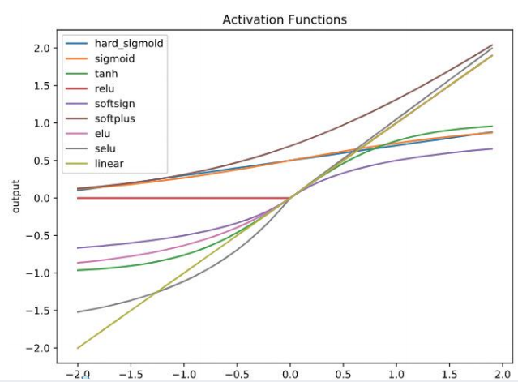
하이퍼 매개 변수¶
- 신경망의 학습률이나 모멘텀의 가중치, 은닉층의 개수, 유닛의 개수, 미니 배치의 크기 등
- 학습률이나 은닉층을 몇 개로 할 것인가?
- 은닉층의 개수나 유닛의 개수는 누가 정하는가?
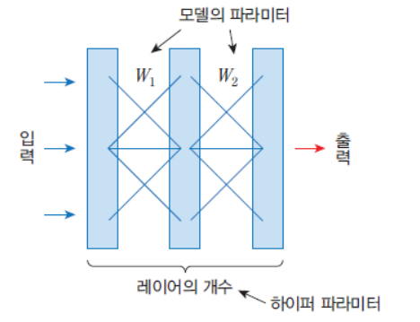
하이퍼 매개 변수 탐색 방법¶
- 기본값 사용 : 라이브러리 개발자가 설정한 기본값 사용
- 수동 검색 : 사용자가 하이퍼 매개변수 지정
- 그리드 검색 : 격자 형태로 하이퍼 매개변수를 변경하며 성능 측정
- 랜덤 검색
그리드 검색¶
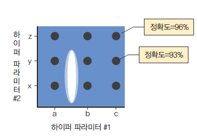
- 각 하이퍼 매개변수에 대해 값을 지정하면 이 중 가장 좋은 조합을 찾는 알고리즘